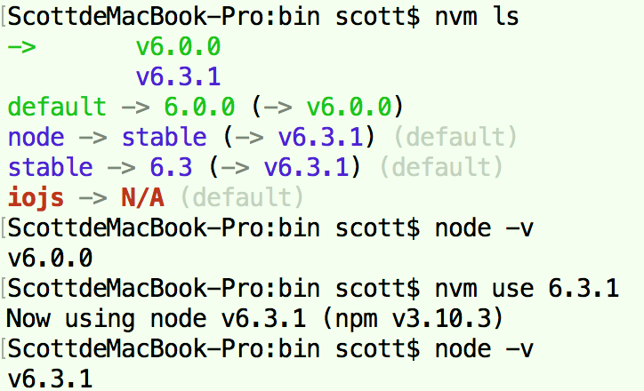
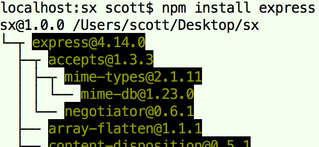

安装
- 安装Node.js的方式有多种多样，比如官网Node.js安装包、使用Homebrew、使用nvm（Node Version Manager ，可以很好地进行Node.js多版本管理）等；在这里使用nvm进行安装Node.js；
- 安装Node.js时会自动安装一些必要的模块，比如npm模块等；
第一步：安装nvm；安装nvm的方式也有多种，比如使用curl下载执行安装脚本、使用Homebrew等；在这里里使用Homebrew进行安装nvm；

brew install nvm # 安装nvm mkdir ~/.nvm vi ~/.bash_profile 输入以下内容 export NVM_DIR="$HOME/.nvm" . "$(brew --prefix nvm)/nvm.sh" 保存退出 source ~/.bash_profile nvm --version # 验证nvm安装是否正确第二步：使用nvm安装Node.js；
nvm使用
nvm是Mac下的Node.js版本管理工具，类似于Python的pyenv，是一个独立安装的软件；
nvm ls # 查看本地安装的node版本 nvm ls-remote # 查看远程可以安装的node版本 nvm install stable # 安装最新稳定版node nvm install <VERSION> # 安装指定的node版本，例如nvm install 6.0.0 nvm use <VERSION> # 切换到某个node版本，例如nvm use 6.0.0 nvm uninstall <VERSION> # 卸载指定的node版本，例如nvm install 6.0.0；注意卸载后，默认的node版本必须还是可用的 nvm alias default <VERSION> # 修改默认的node版本，例如nvm alias default 6.3.1 nvm which <VERSION> # 查看指定的node版本的安装路径 node -v 查看当前node版本
卸载
- Node.js的卸载方式与其安装方式相关；在这里只说明使用官网Node.js安装包进行安装的卸载方式，相关卸载命令如下；
使用安装包进行安装，会自动安装node命令在/usr/local/bin/node目录中，npm命令在/usr/local/lib/node_modules/npm目录中；
sudo rm -rf /usr/local/lib/node_modules # 删除全局node_modules目录 sudo rm /usr/local/bin/node # 删除node cd /usr/local/bin && ls -l | grep "../lib/node_modules/" | awk '{print $9}'| xargs rm # 删除node_modules注册的软链接 sudo rm /var/db/receipts/org.nodejs.* 同送还要删除~/.npm、~/.npmrc等相关文件；卸载nvm时，还要删除~/.nvm；
nmp使用
- NPM（node package manager，node包管理器），用于管理Node.js的模块（package，包），比如安装、卸载、更新、查看、搜索、发布等，相当于Python的pip；
- Node.js的模块的安装分两种：本地安装、全局安装；
- 本地安装：模块会被安装到当前目录下的node_modules中（没有则新建），只能在当前目录下使用；
- 全局安装：模块会被安装到到安装Node.js的目录下lib/node_modules中，可以在所有目录下使用；  第一行的路径为安装的路径，@前面的为模块的name，@后面的数字为模块的版本号，下面的模块为所依赖的模块；
关于npm的本地安装路径问题：npm的原理是从当前目录往上找，找到哪个目录有node_modules文件夹就认为这才是真正的项目目录，模块被安装到那里；所以需要保证从当前的目录开始一直到根目录都没有node_modules文件夹，npm才会“正常”地把模块安装到到当前目录下的node_modules文件夹中（没有则创建）；知乎：关于npm的本地安装路径的问题？
npm -v # 查看npm版本，检查其是否正确安装 npm list | ls [-g] # 查看本地或全局已安装模块（会以层级关系显示所依赖的模块） npm ls --depth=0 # 查看本地已安装模块（只显示顶层的安装模块） npm install # 直接根据当前目录中的package.json文件中声明的依赖模块进行安装 npm install <PACKAGE> # 本地安装模块，例如npm install express npm install -g <PACKAGE> # 全局安装模块，例如npm install -g express npm install <PACKAGE>[@版本号] # 本地安装某个版本的模块，例如npm install express@4.0 npm install <PACKAGE> --save # 本地安装某个版本的模块，并且将模块信息增加到package.json文件声明的依赖模块中（这样提交代码到Github就不用提交node_modules这个文件夹了） # 例如npm install express --save npm uninstall [-g] <PACKAGE> # 删除本地模块或全局模块（会删除依赖的包） npm outdated [-g] [<PACKAGE>] # 查看本地或全局的某个或所有模块中是否是最新的版本 npm update [-g] # 更新全部本地或全局模块 npm update [-g] <PACKAGE> # 更新某个本地或全局模块 npm show | info <PACKAGE> [字段名] # 查看模块详情（不论是否安装）或，例如npm show hexo、npm show hexo dependencies npm search <PACKAGE> # 搜索某个模块（不建议使用）npm install或uninstall等操作的时候，需要被操作的目录中有一个package.json文件（用于管理项目的依赖项和项目的元数据）；通常情况下本地安装时是没有该文件，需要手动创建，否则会报警告“npm WARN ENOENT ENOENT: no such file or directory, open...”；

为了不提示上面的警告，有两种方式解决：
- 使用“npm init”命令进行初始化一个，引导模式输入相关数据；或者直接“npm init -y”直接生成相关数据，但还会报少量警告（自动生成的数据不全）；
使用自动生成插件并配置让执行npm指令时执行自动生成命令；但是在使用nvm进行多版本Node.js切换时会报缺少相关文件错误，这是因为不同版本Node.js的npm配置文件都是同一个（~/.npmrc），而自动生成插件只在某个版本Node.js上被安装，解决办法是在切换到的Node.js版本上也安装自动生成插件；
npm install -g npm-autoinit # 安装自动生成插件 npm config set onload-script npm-autoinit/autoinit # 让执行npm指令时执行自动生成命令
npm配置相关命令
npm config list | ls [-l] # 查看所有配置信息 npm [config] set XXX # 设置相关配置配置（config关键字可以省略） # 设置相关配置也可以直接修改用户目录下.npmrc文件（没有则新建一个）； # proxy相关 npm [congfig] set proxy=http://www.abc.com:8080/ # 设置proxy npm [config] get proxy # 查看proxy npm config delete proxy # 删除proxy（注意这里的config关键字不可省略） # 设置代理也可以在install命令后加--registry参数（registry：记录）进行临时配置 # 比如npm install express --registry=http://registry.npm.taobao.orgnpm发布包相关命令
npm adduser # 注册registry帐号 npm login # 登录 npm publish # 发布项目
n使用
- n是一个npm全局的开源包，作为一个Node.js的模块存在，需要使用npm来全局安装；而nvm是一个独立于Node.js/npm的外部shell脚本；
- 不使用nvm安装Node.js（直接安装或使用n命令），Node.js被安装在/usr/local/lib/，npm安装的模块路径为/usr/local/lib/node_modules；使用nvm安装的Node.js，npm安装的模块路径为/Users/USERNAE/.nvm/versions/node/VERSION/lib/node_modules；
- 当使用n命令切换不同的Node.js版本时，实际上使用相同的全局的npm目录，不能满足“按不同Node.js版本使用不同全局Node.js模块”的要求；强烈建议不使用n；
在使用nvm后再使用n安装Node.js，可以用nvm ls查看通过n安装的Node.js（显示为system版本），但是nvm无法将其卸载；使用n进行卸载，实际上Node.js文件还存在，nvm ls依然有system版本，只能按照卸载以安装包安装的方式进行卸载操作；

npm install -g n # 安装n（也可以不带-g，就是安装后在终端中无法执行n命令） n # 查看当前通过n安装的Node.js版本 n stable # 安装最新稳定版Node.js n <VERSION> # 安装指定的Node.js版本，例如n 6.2.0 n use <VERSION> # 切换到某个Node.js版本（测试无效） n rm <VERSION> # 删除某个Node.js版本（同时安装了nvm，测试无效）
package.json介绍
- package.json的作用就是用于管理项目的依赖项和项目的元数据；该文件中有以下相关必填和非必填字段，下面只列举部分；
- name字段为package的名字（不能含有相关关键字或特殊字符，如node、js等；以后若发布的话需要唯一）；
- version字段为package的版本
- dependencies字段为package的依赖模块；devDependencies字段为package的开发依赖模块；
- main字段为模块入口文件的相对路径；
- engines字段为依赖的Node.js版本；
- 版本号格式为“主版本号(Major).副版本号(Minor).补丁版本号(Patch)”，例如1.2.3；
- ~表示使用最接近的版本，比如~1.1表示下载安装1.1.0~1.2.0之间的模块，~1.1.1表示1.1.1~1.2.0，1的版本、~1表示1.0.0~1.1.0；空格、x、*表示任意版本；
调试运行
创建一个example.js文件（touch example.js），写入以下内容，并运行（node example.js），打开浏览器访问http://127.0.0.1:1337/；
http = require('http'); http.createServer(function(req, res) { res.writeHead(200, {'Content-Type': 'text/plain'}); res.end('Hello World\n'); }).listen(1337, '127.0.0.1'); console.log('Server running at http://127.0.0.1:1337/');